Some of which are…
- Uliza Polls
- Information services
- Registration
- Uliza Answers
Observation #1
These can all be thought of as programmable or scripted conversations, in one form or another.
Observation #2
Such conversations take place across one or more communication channels.
Question
Can we capture the essence of this interactivity in a technology-agnostic way?
Goal
The goal is to introduce a set of building blocks that:- Allows us to design and implement new services:
- easily,
- reasonably fast, and
- without the need to think about the underlying delivery mechanisms.
- Enables these services to:
- work with different channels, and even across multiple channels at once; and
- integrate with different service providers and technology platforms.
Open Interactivity Engine

The script
We will use a directed graph to represent the control flow aspects of a conversation, with each individual vertex serving one of a number of purposes, the two most important of which are:
A node that has a message attached to it. An example would be to welcome the user and explain the basic steps involved in using the service.
A node that responds to the user’s intent to perform some action. This could be, for example, for the user to express that they would like to ask a question.
Note that
At this stage, we are not saying anything about:
- The format of the message: Is it audio, or text, or perhaps even video?
- How the user communicates their intent: This could be, e.g., by pressing a button, typing a message, or by using their voice.
And this is an important point—we want to abstract as much as possible from the technologies used to deliver these services in the end—and from the channels.
These are concerns that should not affect the script.
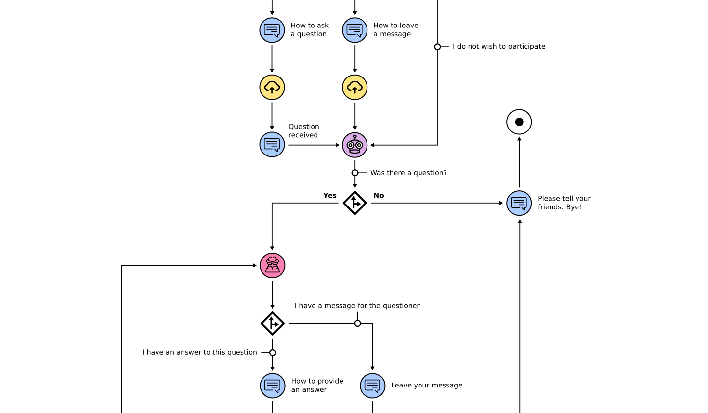
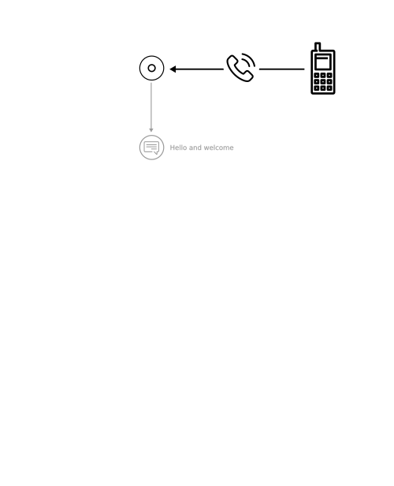
The user calls in on the campaign number.

A recorded message is played.
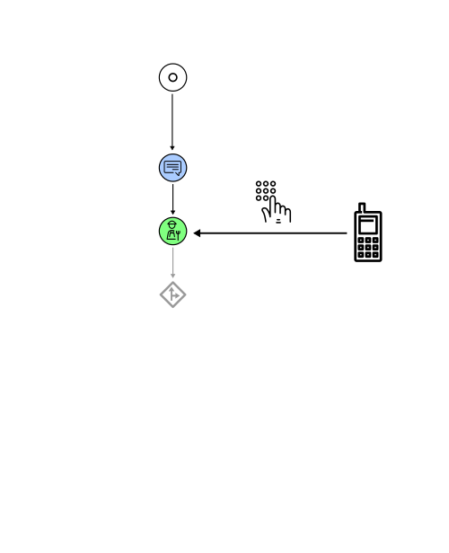
The user presses 1 to ask a question.
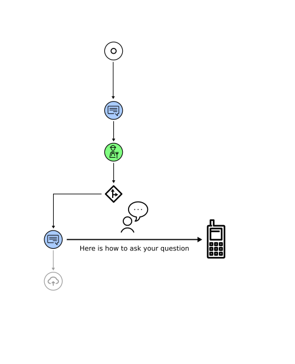
Instructions are played.
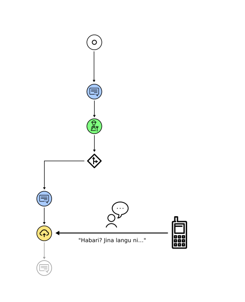
The user records their message.
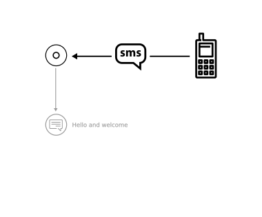
The audience member sends an SMS with a keyword.
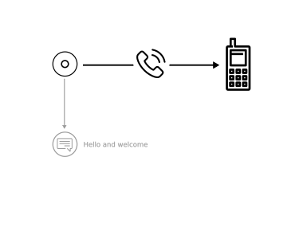
An outbound call is made.
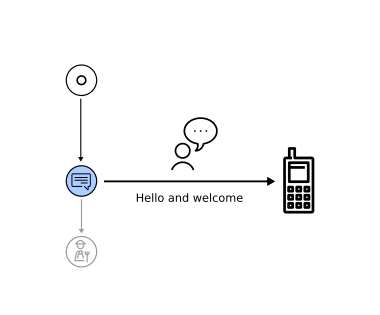
The process continues as before.
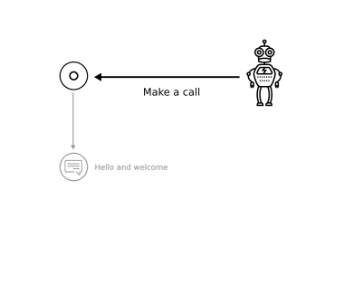
An event is automatically triggered.
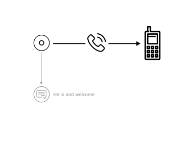
An outbound call is made.
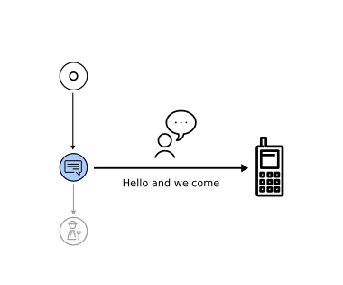
The process continues as before.
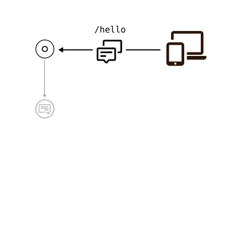
An audience member types a special command to engage the chat bot.
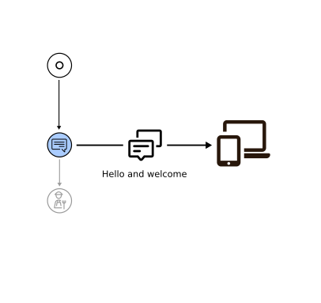
The bot replies with a welcome message and some brief instructions.
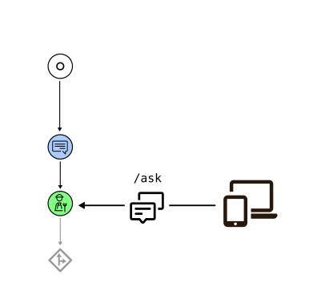
The user sends a command to state their intention to ask a question.
Next steps
Thoughts, ideas?